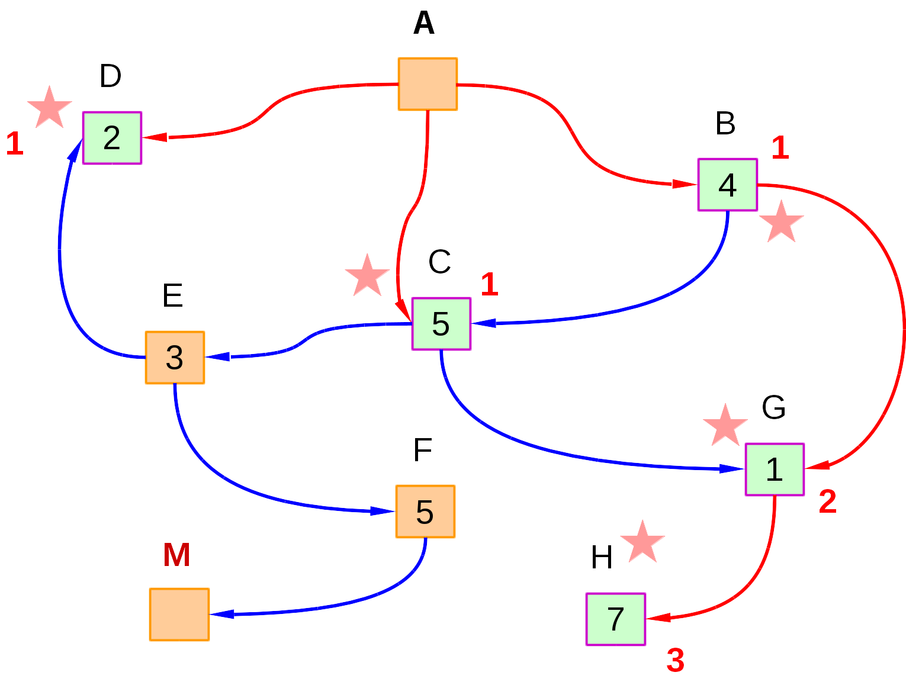

La búsqueda por ascenso de colinas (Hill Climbing) es una de las técnicas que comúnmente se emplean cuando el algoritmo A* falla. De igual forma, otras técnicas que también se emplean en estos casos son la búsqueda "simulated annealing" y los algoritmos genéticos (Marcus, 2015).
Algunas de las características más importantes de este tipo de búsqueda son las que se señalan a continuación (Marcus, 2015):
- Realizada una búsqueda local y moverse a los estados vecinos.
- Fundamento base: comenzar con una estimación inicial de la solución e ir mejorándola gradualmente hasta que sea una solución.
- Ventajas de este algoritmo:
- Usa poca memoria
- Es capaz de encontrar con frecuencia soluciones razonables en espacios de estados muy grandes o infinitos.
- Es importante destacar que este algoritmo es sumamente útil para problemas de optimización pura:
- Encuentra o aproxima el mejor estado de acuerdo a una función objetivo.
- Es óptimo si el espacio de búsqueda es convexo. Para conocer qué es un espacio convexo de búsqueda ver el siguiente artículo (página 13, figura 5): Artículo (será parte de la prueba y el examen).
Es muy importante destacar que la función objetivo puede ser de minimización o maximación, esto dependerá del problema!.
El algoritmo de búsqueda por ascenso de colinas se realiza a través de los siguientes pasos (Marcus, 2015; Geeks for Geeks, 2018c):
Pasos para ejecutar la búsqueda:
Paso 1: Evaluar el estado inicial. Si es un estado meta, entonces detener la búsqueda y devolver el estado. En caso contrario, marcar al estado inicial como estado actual.
Paso 2: Repetir hasta que se encuentre el estado meta o hasta que no existan más operadores u acciones que se puedan tomar en el estado actual.
- Seleccionar el estado al que aún no se marca como estado actual y analizarlo para desplegar un nuevo estado. Para ello, dado el estado actual "n" y para determinar el sucesor "s" empleamos la siguiente fórmula, donde f(s) es la función objetivo:
- Ejecutar las siguientes acciones para evaluar el nuevo estado:
- Si el estado actual es un estado objetivo detener el algoritmo y retornar.
- Si existe un mejor estado que el actual, marcarlo como estado actual y proceder adelante:
- Si f(n) < f(s), nos moveremos a estado "s". Recuerde, esta función puede ser maximización o minimización, todo dependerá del problema.
- Si no existe un mejor estado que el actual, quedarse en el estado actual "n" y continuar con el bucle hasta encontrar una solución.
Paso 3: Salir.
Propiedades del algoritmo:
Algunas de las propiedades más destacadas de este algoritmo son las que se apuntan seguidamente (Marcus, 2015):
- El algoritmo termina cuando encuentra un pico o valle (dependiendo si la función es de maximización o minimización).
- No analiza los vecinos inmediatos del estado actual.
- Escoge de forma aleatoria un estado si existieren más de 1 que sea la mejor opción.
- No realiza backtracking, ya que no recuerda dónde está.
- Es importante anotar que el algoritmo puede quedarse en un máximo o mínimo local, y no hallar la mejor solución:
Ejemplo de máximo y mínimo local vs máximo y mínimo global (Wikipedia, 2018).
A fin de ilustrar cómo funciona este algoritmo, vamos a trabar con el siguiente grafo, donde se deberá tomar en cuenta las siguientes consideraciones:
- El nodo de partida es "A", mientras que el nodo de llegada es "M".
- El coste de cada nodo al nodo meta, se determina a través una función heurística. En nuestro caso los valores se han colocado dentro de cada nodo.
- Para este problema escogeremos el nodo con el menor coste (minimización).
- Como primer paso, analizamos las acciones que podemos tomar desde el nodo "A" (dado que hemos comprobado que no es un nodo meta). Como se aprecia, tenemos 3 caminos que se pueden seguir: "B", "C" y "D" con costes 4, 5 y 2, respectivamente. El algoritmo escogerá el de menor coste, en este caso el camino por el nodo "D". Anotamos que hemos tomado la primera decisión (con un número 1 junto a los nodos) y marcamos como visitado al nodo "D". Es importante notar que aquí también podemos tener una especie de Cola donde se guardan las decisiones que vamos tomando:
- Visitados = {A, D}
- Como observamos, en la etapa 1 tomamos la decisión de ir por el nodo "D", el que tiene menor coste. Comprobamos que este nodo no es meta, y dado que no es posible obtener sucesores, volvemos a analizar en la etapa 1 qué otras opciones nos quedan. En este caso, tenemos los nodos "B" y "C", y dado que el nodo "B" es el de menor coste, lo elegimos y lo marcamos como visitado:
- Visitados = {A, D, B}
- A continuación verificamos que el nodo "B" no sea un nodo meta, y dado que no lo es analizamos las posibles acciones que podemos tomar desde el mismo. En este caso tenemos dos sucesores, el nodo "G" y el nodo "C". Escogemos el nodo con menor coste y tomamos la segunda decisión (marcando con un número 2 a los sucesores de "B") y tomamos el único camino disponible:
- Visitados = {A, D, B, G}
- A continuación comprobamos que el nodo "G" no sea un nodo meta, y dado que no lo es, analizamos sus posible sucesores. Como únicamente existe el nodo "H", no nos queda otra alternativa que tomar este camino. Marcamos al nodo "G" como visitado, y anotamos que hemos tomado la tercera decisión expandiendo los sucesores de "G", que en este caso solo es el nodo "H":
- Visitados = {A, D, B, G, H}
- En este paso comprobamos que "H" no sea nodo meta para continuar, como no lo es, tratamos de expandir sus sucesores. En este caso, el nodo "H" no tiene sucesores, por lo que debemos volver al punto donde tomamos la decisión 1. Como sí existen opciones que no hemos explorado en el punto donde se tomó la decisión 1, tomamos el camino "C". Recuerde, si no hubiese más opciones en la decisión 1, deberíamos buscar en la 2, y así sucesivamente. Ahora pasamos a expandir el nodo "C" y marcar como visitado al nodo "H":
- Visitados = {A, D, B, G, H}
- 
- En esta etapa verificamos que "H" no sea un nodo meta y analizamos cuáles son las posibles acciones que se pueden tomar desde el nodo "C". En este caso, tenemos 2 alternativas: "E" y "G". Sin embargo, dado que "G" ya se visitó, tomamos el camino "E". Para ello, marcamos como visitado al nodo "C" y desplegamos sus sucesores (anotando que es la decisión 4 la que tomamos):
- Visitados = {A, D, B, G, H, C}
- Verificamos que el nodo "E" no sea un nodo meta, y dado que no lo es, analizamos sus sucesores. En este caso tenemos dos: "F" y "D". Dado que "D" ya se visitó, tomamos el camino por "F" y anotamos que se elije abrirlo en la quinta decisión (previo a marcar al nodo "E" como visitado):
- Visitados = {A, D, B, G, H, C, E}
- A continuación verificamos que el nodo "F" no sea nodo meta, y dado que no lo es, procedemos a analizar la posibles acciones que se pueden tomar en este nodo. En este caso, solo podemos desplegar al nodo "M" (cuyo coste es 0). Anotamos como visitado al nodo "F" y desplegamos su sucesor, anotando que tomamos la sexta decisión:
- Visitados = {A, D, B, G, H, C, E, F}
- En este paso verificamos que el nodo "M" sí es un nodo meta, detenemos la búsqueda y devolvemos la ruta elegida:
- Visitados = {A, D, B, G, H, C, E, F}
- Ruta = {A, C, E, F, M}